We now come to the most remarkable and highly specialized proteins, the enzymes. Enzymes are the reaction catalysts of biological systems. They have extraordinary catalytic power, often far greater than that of synthetic catalysts. They have a high degree of specificity for their substrates, they accelerate specific chemical reactions, and they function in aqueous solutions under very mild conditions of temperature and pH. Few nonbiological catalysts show all these properties.
Enzymes are one of the keys to understanding how cells survive and proliferate. Acting in organized sequences, they catalyze the hundreds of stepwise reactions in metabolic pathways by which nutrient molecules are degraded, chemical energy is conserved and transformed, and biological macromolecules are made from simple precursors. Some of the many enzymes participating in metabolism are regulatory enzymes, which can respond to various metabolic signals by changing their catalytic activity accordingly. Through the action of regulatory enzymes, enzyme systems are highly coordinated to yield a harmonious interplay among the many different metabolic activities necessary to sustain life.
The study of enzymes also has immense practical importance. In some diseases, especially inheritable genetic disorders, there may be a deficiency or even a total absence of one or more enzymes in the tissues (see Table 6-6). Abnormal conditions can also be caused by the excessive activity of a specific enzyme. Measurements of the activity of certain enzymes in the blood plasma, erythrocytes, or tissue samples are important in diagnosing disease. Enzymes have become important practical tools, not only in medicine but also in the chemical industry, in food processing, and in agriculture. Enzymes play a part even in everyday activities in the home such as food preparation and cleaning.
The chapter begins with descriptions of the properties of enzymes and the principles underlying their catalytic power. Following is an introduction to enzyme kinetics, a discipline that provides much of the framework for any discussion of enzymes. Specific examples of enzyme mechanisms are then provided, illustrating principles introduced earlier in the chapter. We will end with a discussion of regulatory enzymes.
Much of the history of biochemistry is the history of enzyme research. Biological catalysis was first recognized and described in the early 1800s, in studies of the digestion of meat by secretions of the stomach and the conversion of starch into sugar by saliva and various plant extracts. In the 1850s Louis Pasteur concluded that fermentation of sugar into alcohol by yeast is catalyzed by "ferments." He postulated that these ferments, later named enzymes, are inseparable from the structure of living yeast cells, a view that prevailed for many years. The discovery by Eduard Buchner in 1897 that yeast extracts can ferment sugar to alcohol proved that the enzymes involved in fermentation can function when removed from the structure of living cells. This encouraged biochemists to attempt the isolation of many different enzymes and to examine their catalytic properties.
James Sumner's isolation and crystallization of urease in 1926 provided a breakthrough in early studies of the properties of specific enzymes. Sumner found that the urease crystals consisted entirely of protein and postulated that all enzymes are proteins. Lacking other examples, this idea remained controversial for some time. Only later in the 1930s, after John Northrop and his colleagues crystallized pepsin and trypsin and found them also to be proteins, was Sumner's conclusion widely accepted. During this period, J.B.S. Haldane wrote a treatise entitled "Enzymes." Even though the molecular nature of enzymes was not yet fully appreciated, this book contained the remarkable suggestion that weak-bonding interactions between an enzyme and its substrate might be used to distort the substrate and catalyze the reaction. . |
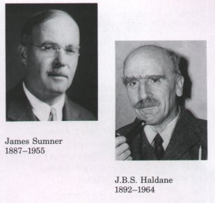 |
| This insight lies at the heart of our
current understanding of enzymatic catalysis. The latter
part of the twentieth century has seen intensive research
on the enzymes catalyzing the reactions of cell
metabolism. This has led to the purification of thousands
of enzymes (Fig. 8-1), elucidation of the structure and
chemical mechanism of hundreds of these, and a general
understanding of how enzymes work. Figure 8-1 Crystals of pyruvate kinase, an enzyme of the glycolytic pathway. The protein in a crystal is generally characterized by a high degree of purity and structural homogeneity |
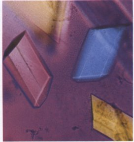 |
With the exception of a small group of catalytic RNA molecules (Chapter 25), all enzymes are proteins. Their catalytic activity depends upon the integrity of their native protein conformation. If an enzyme is denatured or dissociated into subunits, catalytic activity is usually lost. If an enzyme is broken down into its component amino acids, its catalytic activity is always destroyed. Thus the primary, secondary, tertiary, and quaternary structures of protein enzymes are essential to their catalytic activity.
Enzymes, like other proteins, have molecular weights ranging from about 12,000 to over 1 million. Some enzymes require no chemical groups other than their amino acid residues for activity. Others require an additional chemical component called a cofaetor. The cofactor may be either one or more inorganic ions, such as Fe2+, Mg2+, Mn2+, or Zn2+ (Table 8-1), or a complex organic or metalloorganic molecule called a coenzyme (Table 8-2). Some enzymes require both a coenzyme and one or more metal ions for activity. A coenzyme or metal ion that is covalently bound to the enzyme protein is called a prosthetic group.A complete, catalytically active enzyme together with its coenzyme and/or metal ions is called a holoenzyme. The protein part of such an enzyme is called the apoenzyme or apoprotein. Coenzymes function as transient carriers of specific functional groups (Table 8-2). Many vitamins, organic nutrients required in small amounts in the diet, are precursors of coenzymes. Coenzymes will be considered in more detail as they are encountered in the discussion of metabolic pathways in Part III of this book.
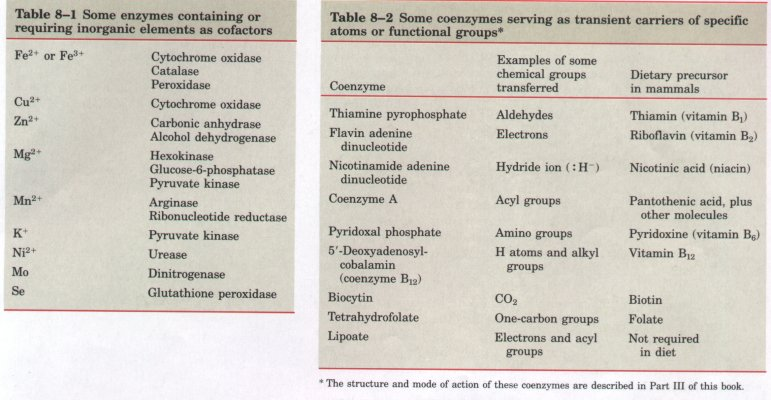
Finally, some enzymes are modified by phosphorylation, glycosylation, and other processes. Many of these alterations are involved in the regulation of enzyme activity.
Many enzymes have been named by adding the suffix "-ase" to the name of their substrate or to a word or phrase describing their activity. Thus urease catalyzes hydrolysis of urea, and DNA polymerase catalyzes the synthesis of DNA. Other enzymes, such as pepsin and trypsin, have names that do not denote their substrates. Sometimes the same enzyme has two or more names, or two different enzymes have the same name. Because of such ambiguities, and the ever-inereasing number of newly discovered enzymes, a system for naming and classifying enzymes has been adopted by international agreement. This system places all enzymes in six major classes, each with subclasses, based on the type of reaction catalyzed (Table 8-3). Each enzyme is assigned a four-digit classification number and a systematic name, which identifies the reaction catalyzed. As an example, the formal systematic name of the enzyme catalyzing the reaction
ATP + D-glucose  ADP + D-glucose-6-phosphate
ADP + D-glucose-6-phosphate
is ATP : glucose phosphotransferase, which indicates that it catalyzes the transfer of a phosphate group from ATP to glucose. Its enzyme classification number (E.C. number) is 2.7.1.1; the first digit (2) denotes the class name (transferase) (see Table 8-3); the second digit (7), subclass (phosphotransferase); the third digit (1), phosphotransferases with a hydroxyl group as acceptor; and the fourth digit (1), D-glucose as the phosphate-group acceptor. When the systematic name of an enzyme is long or cumbersome, a trivial name may be used-in this case hexokinase.
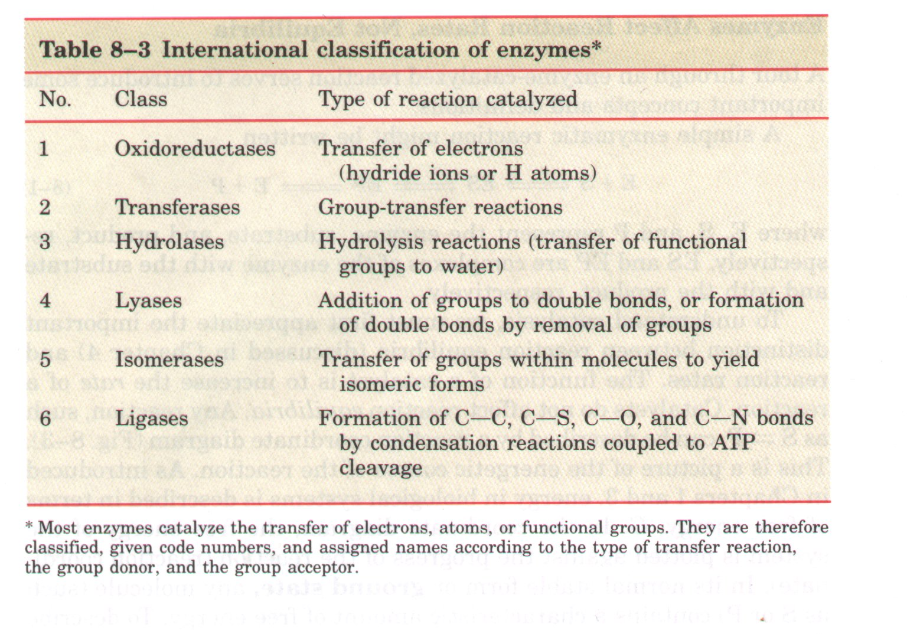
A complete list and description of the thousands of known enzymes would be well beyond the scope of this book. This chapter is instead devoted primarily to principles and properties common to all enzymes.
| The enzymatic catalysis of reactions is
essential to living systems. Under biologically relevant
conditions, uncatalyzed reactions tend to be slow. Most
biological molecules are quite stable in the neutral-pH,
mild-temperature, aqueous environment found inside cells.
Many common reactions in biochemistry involve chemical
events that are unfavorable or unlikely in the cellular
environment, such as the transient formation of unstable
charged intermediates or the collision of two or more
molecules in the precise orientation required for
reaction. Reactions required to digest food, send nerve
signals, or contract muscle simply do not occur at a
useful rate without catalysis. An enzyme circumvents these problems by providing a specific environment within which a given reaction is energetically more favorable. The distinguishing feature of an enzyme-catalyzed reaction is that it occurs within the confines of a pocket on the enzyme called the active site (Fig. 8-2). The molecule that is bound by the active site and acted upon by the enzyme is called the substrate. The enzymesubstrate complex is central to the action of enzymes, and it is the starting point for mathematical treatments defining the kinetic behavior of enzyme-catalyzed reactions and for theoretical descriptions of enzyme mechanisms. |
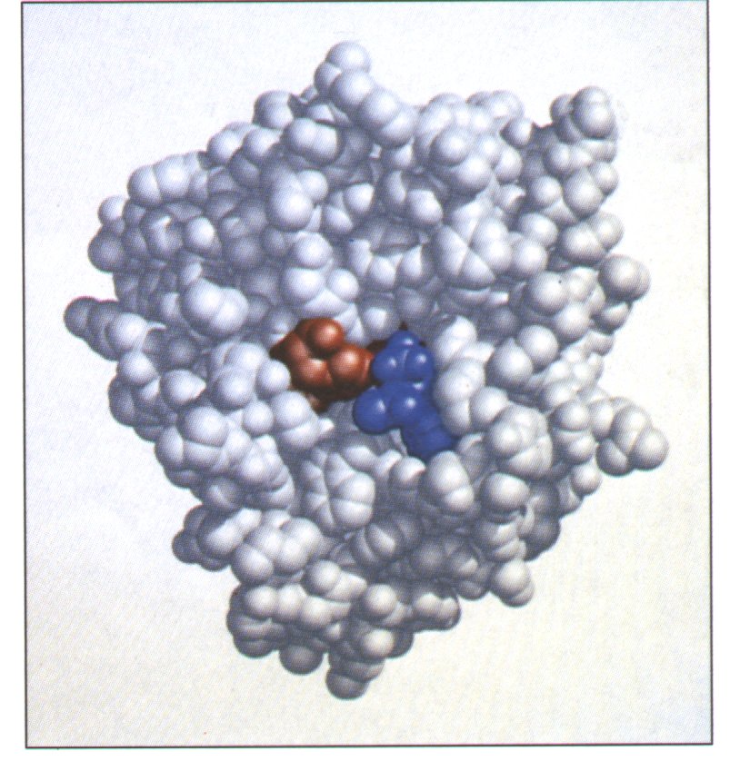 Figure 8-2 Binding of a substrate to an enzyme at the active site. The enzyme chymotrypsin is shown, bound to a substrate (in blue). Some key active-site amino acids are shown in red. |
A tour through an enzyme-catalyzed reaction serves to introduce some important concepts and definitions.
A simple enzymatic reaction might be written
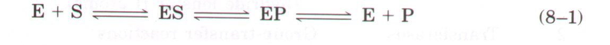
where E, S, and P represent the enzyme, substrate, and product, respectively. ES and EP are complexes of the enzyme with the substrate and with the product, respectively.
| To understand catalysis, we must first
appreciate the important distinction between reaction
equilibria (discussed in Chapter 4) and reaction rates.
The function of a catalyst is to increase the rate of a
reaction. Catalysts do not affect reaction equilibria.
Any reaction, such as S |
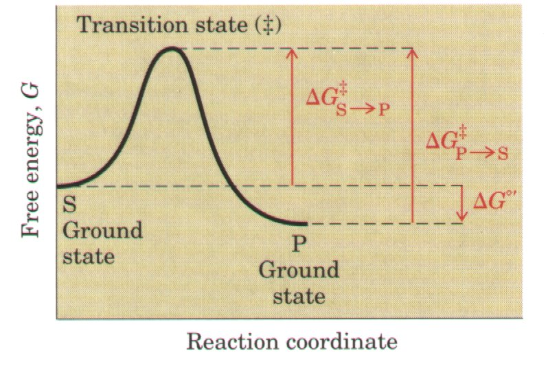 Figure 8-3 Reaction coordinate diagram for a chemical reaction. The free energy of the system is plotted agains the progress of the reaction. A diagram of this kind is a description of the energetic course of the reaction, and the horizontal axis (reaction coordinate) reflects the progressive chemical changes (e.g., bond breakage or formation) as S is converted to P. The S and P symbols mark the free energies of the substrate and product ground states. The transition state is indicated by the symbol #. The activation energies, dG#, for the S → P and P → S reactions are indicated. ΔG°' is the overall standard free-energy change in going from S to P. |
The equilibrium between S and P reflects the difference in the free energy of their ground states. In the example shown in Figure 8-3, the free energy of the ground state of P is lower than that of S, so ,ΔG°'for the reaction is negative and the equilibrium favors P. This equilibrium is not affected by any catalyst.
A favorable equilibrium, however, does not mean that the S →P conversion is fast. The rate of a reaction is dependent on an entirely different parameter. There is an energetic barrier between S and P that represents the energy required for alignment of reacting groups, formation of transient unstable charges, bond rearrangements, and other transformations required for the reaction to occur in either direction. This is illustrated by the energetic "hill" in Figures 8-3 and 8-4. To undergo reaction, the molecules must overcome this barrier and therefore must be raised to a higher energy level. At the top of the energy hill is a point at which decay to the S or P state is equally probable (it is downhill either way). This is called the transition state. The transition state is not a chemical species with any significant stability and should not be confused with a reaction intermediate. It is simply a fleeting molecular moment in which events such as bond breakage, bond formation, and charge development have proceeded to the precise point at which a collapse to either substrate or product is equally likely. The difference between the energy levels of the ground state and the transition state is called the activation energy ( ΔG# ). The rate of a reaction reflects this activation energy; a higher activation energy corresponds to a slower reaction. Reaction rates can be increased by raising the temperature, thereby inereasing the number of molecules with sufficient energy to overcome this energy barrier. Alternatively the activation energy can be lowered by adding a catalyst (Fig. 8-4). Catalysts enhance reaction rates by lowering activation energies.
Enzymes are no exception to the rule that catalysts do not affect reaction equilibria. The bidirectional arrows in Equation 8-1 make this point: any enzyme that catalyzes the reaction S → P also catalyzes the reaction P → S. Its only role is to accelerate the interconversion of S and P. The enzyme is not used up in the process, and the equilibrium point is unaffected. However, the reaction reaches equilibrium much faster when the appropriate enzyme is present because the rate of the reaction is increased.
This general principle can be illustrated by considering the reaction of glucose and O2to form CO2 and H2O. This reaction has a very large and negative ;ΔG°', and at equilibrium the amount of glucose present is negligible. Glucose, however, is a stable compound, and it can be combined in a container with O2 almost indefinitely without reacting. Its stability reflects a high activation energy for reaction. In cells, glucose is broken down in the presence of O2 to CO2 and H2O in a pathway of reactions catalyzed by enzymes. These enzymes not only accelerate the reactions, they organize and control them so that much of the energy released in this process is recovered in other forms and made available to the cell for other tasks. This is the primary energyyielding pathway for cells (Chapters 14 and 18), and these enzymes allow it to occur on a time scale that is useful to the cells.
| In practice, any reaction may have
several steps involving the formation and decay of
transient chemical species called reaction
intermediates. When the S |
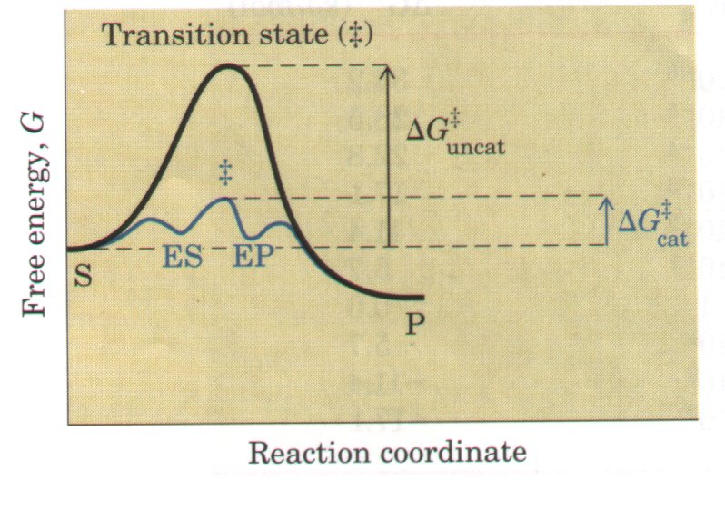 Figure 8-4 Reaction coordinate diagram comparing the enzyme-catalyzed and uncatalyzed reactions S → P. The ES and EP intermediates occupy minima in the energetic progress curve of the enzymecatalyzed reaction. The terms ΔG#uncat and ΔG#cat correspond to the activation energies for the uncatalyzed and catalyzed reactions, respectively. The activation energy for the overall process is lower when the enzyme catalyzes the reaction. |
As described in Chapter l, activation energies are energetic barriers to chemical reactions; these barriers are crucial to life itself?The stability of a molecule inereases with the height of its activation barrier. Without such energetic barriers, complex macromolecules would revert spontaneously to much simpler molecular forms. The complex and highly ordered structures and metabolic processes in every cell could not exist. Enzymes have evolved to lower activation energies selectively for reactions that are needed for cell survival.
Reaction equilibria are inextricably linked to ΔG°' and reaction rates are linked to ΔG# . A basic introduction to these thermodynamic relationships is the next step in understanding how enzymes work.
As introduced in Chapter 4, an equilibrium such as S  P is described by an
equilibrium constant, Keq. Under
the standard conditions used to compare biochemical processes, an
equilibrium constant is denoted Keq':
P is described by an
equilibrium constant, Keq. Under
the standard conditions used to compare biochemical processes, an
equilibrium constant is denoted Keq':
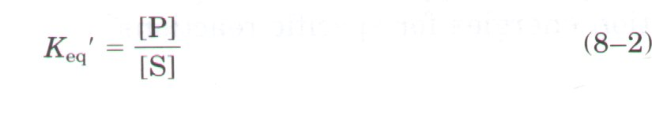
From thermodynamics, the relationship between Keq' and ΔG can be described by the expression
| where R is the gas constant (8.315 J/mol •K) and T is the absolute temperature (298 K). This expression will be developed and discussed in more detail in Chapter 13. The important point here is that the equilibrium constant is a direct reflection of the overall standard freeenergy change in the reaction (Table 8-4). A large negative value for ΔG reflects a favorable reaction equilibrium, but as already noted this does not mean the reaction will proceed at a rapid rate. | 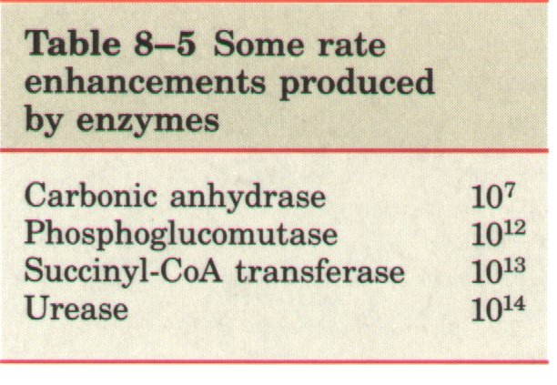 |
The rate of any reaction is determined by the concentration of the reactant (or reactants) and by a rate constant, usually denoted by the symbol k. For the unimolecular reaction S → P, the rate or velocity of the reaction, V, representing the amount of S that has reacted per unit time, is expressed by a rate law:
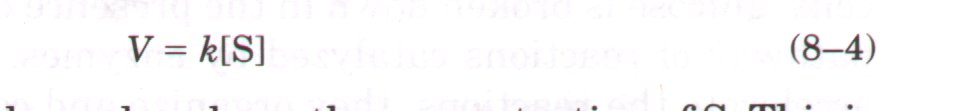
In this reaction, the rate depends only on the concentration of S. This is called a first-order reaction. The factor k is a proportionality constant that reflects the probability of reaction under a given set of conditions (pH, temperature, etc.). Here, k is a first-order rate constant and has units of reciprocal time (e.g., s-1). If a first-order reaction has a rate constant k of 0.03 s-1, this may be interpreted (qualitatively) to mean that 3% of the available S will be converted to P in 1 s. A reaction with a rate constant of 2,000 s-l will be over in a small fraction of a second. If the reaction rate depends on the concentration of two different compounds, or if two molecules of the same compound react, the reaction is second order and k is a second-order rate constant (with the units M-1s-1). The rate law has the form
From transition-state theory, an expression can be derived that relates the magnitude of a rate constant to the activation energy:
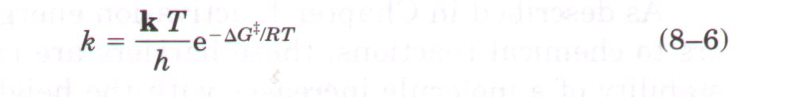
where k is the Boltzmann constant and h is Planck's constant. The important point here is that the relationship between the rate constant, k, and the activation energy, ΔG#, is inverse and exponential. In simplified terms, this is the basis for the statement that a lower activation energy means a higher reaction rate, and vice versa.
Now we turn from what enzymes do to how they do it.
| Enzymes are extraordinary catalysts. The rate enhancements brought about by enzymes are often in the range of 7 to 14 orders of magnitude (Table 8-5). Enzymes are also very specific, readily discriminating between substrates with quite similar structures. How can these enormous and highly selective rate enhancements be explained? Where does the energy come from to provide a dramatic lowering of the activation energies for specific reactions? | 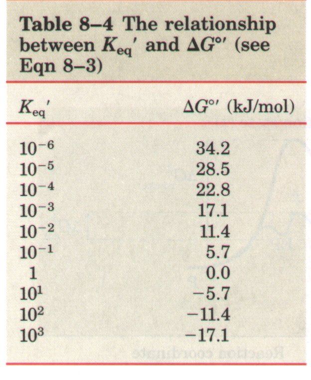 |
Part of the explanation for enzyme action lies in well-studied chemical reactions that take place between a substrate and enzyme functional groups (specific amino acid side chains, metal ions, and coenzymes). Catalytic functional groups on enzymes can interact transiently with a substrate and activate it for reaction. In many cases, these groups lower the activation energy (and thereby accelerate the reaction) by providing a lower-energy reaction path. Common types of enzymatic catalysis are outlined later in this chapter.
Catalytic functional groups, however, are not the only contributor to enzymatic catalysis. The energy required to lower activation energies is generally derived from weak, noncovalent interactions between the substrate and the enzyme. The factor that really sets enzymes apart from most nonenzymatic catalysts is the formation of a specific ES complex. The interaction between substrate and enzyme in this complex is mediated by the same forces that stabilize protein structure, including hydrogen bonds and hydrophobic, ionic, and van der Waals interactions (Chapter 7). Formation of each weak interaction in the ES complex is accompanied by a small release of free energy that provides a degree of stability to the interaction. The energy derived from enzyme-substrate interaction is called binding energy. Its significance extends beyond a simple stabilization of the enzymesubstrate interaction. Binding energy is the major source of free energy used by enzymes to lower the actiuation energies of reactions.
Two fundamental and interrelated principles provide a general explanation for how enzymes work. First, the catalytic power of enzymes is ultimately derived from the free energy released in forming the multiple weak bonds and interactions that occur between an enzyme and its substrate. This binding energy provides specificity as well as catalysis. Second, weak interactions are optimized in the reaction transition state; enzyme active sites are complementary not to the substrates per se, but to the transition states of the reactions they catalyze. These themes are critical to an understanding of enzymes, and they now become the primary focus of the chapter.
How does an enzyme use binding energy to lower the activation energy for reaction? Formation of the ES complex is not the explanation in itself, although some of the earliest considerations of enzyme mechanisms began with this idea. Studies on enzyme specificity carried out by Emil Fischer led him to propose, in 1894, that enzymes were structurally complementary to their substrates, so that they fit together like a "lock and key" (Fig. 8-5).
| This elegant idea, that a specific (exclusive) interaction between two biological molecules is mediated by molecular surfaces with complementary shapes, has greatly influenced the development of biochemistry, and lies at the heart of many biochemical processes. However, the "lock and key" hypothesis can be misleading when applied to the question of enzymatic catalysis. An enzyme completely complementary to its substrate would be a very poor enzyme. Consider an imaginary reaction, the breaking of a metal stick. The uncatalyzed reaction is shown in Figure 8-6a. We will examine two imaginary enzymes to catalyze this reaction, both of which employ magnetic forces as a paradigm for the binding energy used by real enzymes. We first design an enzyme perfectly complementary to the substrate (Fig. 86b). The active site of this "stickase" enzyme is a pocket lined with magnets. To react (break), the stick must reach the transition state of the reaction. The stick fits so tightly in the active site that it cannot bend, because bending of the stick would eliminate some of the magnetic interactions between stick and enzyme. Such an enzyme impedes the reaction, stabilizing the substrate instead. In a reaction coordinate diagram (Fig. 8-6b), this kind of ES complex would correspond to an energy well from which it would be difficult for the substrate to escape. Such an enzyme would be useless. | 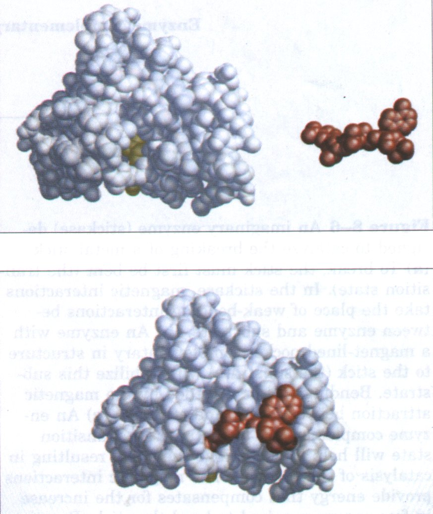 Figure 8-5 Complementary shapes of a substrate and its binding site on an enzyme. The enzyme dihydrofolate reductase is shown with its substrate, NADP+ (red), unbound (top) and bound (bottom). Part of a tetrahydrofolate molecule (yellow), also bound to the enzyme, is visible. The NADP+ binds to a pocket that is complementary to it in shape and ionic properties. Emil Fischer proposed that enzymes and their substrates have shapes that closely complement each other, like a lock and key. This idea can readily be extended to the interactions of other types of proteins with ligands or other proteins. In reality, the complementarity is rarely perfect, and the interaction of a protein with a ligand often involves changes in the conformation of one or both molecules. This Lack of perfect complementarity between an enzyme and its substrate (not evident in this figure) is important to enzymatic catalysis. |
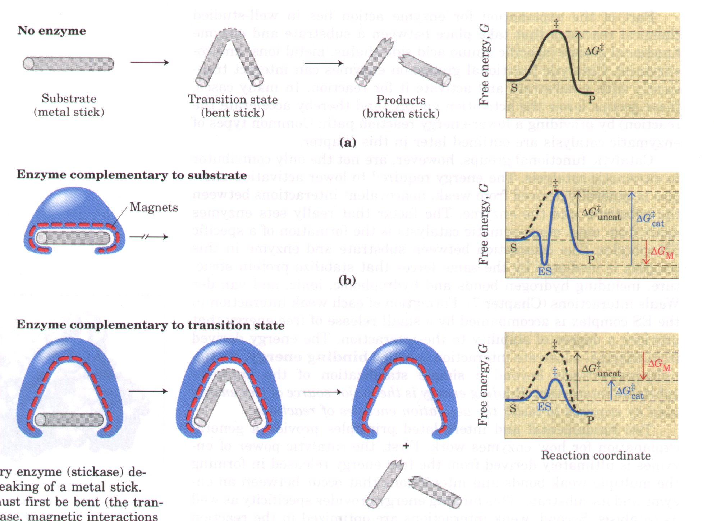
Figure 8-6 An imaginary enzyme (stickase) designed to catalyze the breaking of a metal stick.(a) To break, the stick must first be bent (the transition state). In the stickase, magnetic interactions take the place of weak-bonding interactions between enzyme and substrate. (b) An enzyme with a magnet-lined pocket complementary in structure to the stick (the substrate) will stabilize this substrate. Bending will be impeded by the magnetic attraction between stick and stickase. (c) An enzyme complementary to the reaction transition state will help to destabilize the stick, resulting in catalysis of the reaction. The magnetic interactions provide energy that compensates for the increase in free energy required to bend the stick. Reaction coordinate diagrams show the energetic consequences of complementarity to substrate versus complementarity to transition state. The term ΔGM represents the energy contributed by the magnetic interactions between the stick and stickase. When the enzyme is complementary to the substrate, as in (b), the ES complex is more stable and has less free energy in the ground state than substrate alone. The result is an increase in the activation energy. For simplicity, the EP complexes are not shown.
The modern notion of enzymatic catalysis was first proposed by Haldane in 1930, and elaborated by Linus Pauling in 1946. In order to catalyze reactions, an enzyme must be complementary to the reaction transition state. This means that the optimal interactions (through weak bonding) between substrate and enzyme can occur only in the transition state. Figure 8-6c demonstrates how such an enzyme can work. The metal stick binds, but only a few magnetic interactions are used in forming the ES complex. The bound substrate must still undergo the increase in free energy needed to reach the transition state. Now, however, the increase in free energy required to draw the stick into a bent and partially broken conformation is offset or "paid for" by the magnetic interactions that form between the enzyme and substrate in the transition state. Many of these interactions involve parts of the stick that are distant from the point of breakage; thus interactions between the stickase and nonreacting parts of the stick provide some of the energy needed to catalyze stick breakage. This "energy payment" translates into a lower net activation energy and a faster reaction rate.
| Real enzymes work on an analogous principle. Some weak interactions are formed in the ES complex, but the full complement of possible weak interactions between substrate and enzyme are formed only when the substrate reaches the transition state. The free energy (binding energy) released by the formation of these interactions partially offsets the energy required to get to the top of the energy hill. The summation of the unfavorable (positive) ΔG# and the favorable (negative) binding energy (ΔGB) results in a lower net activation energy (Fig. 8-7 ). Even on the enzyme, the transition state represents a brief point m tlme tnat tne substrate spenas atop an energy nm. rne enzymecatalyzed reaction is much faster than the uncatalyzed process, however, because the hill is much smaller. The important principle is that weak-bonding interactions between the enzyme and the substrate provide the major driving force for enzymatic catalysis. The groups on the substrate that are involved in these weak interactions can be at some distance from the bonds that are broken or changed. The weak interactions that are formed only in the transition state are those that make the primary contribution to catalysis. | 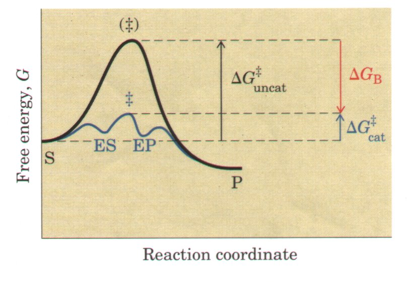 Figure 8-7 The role of binding energy in catalysis. To lower the activation energy for a reaction, the system must acquire an amount of energy equivalent to the amount by which ΔG# is lowered. This energy comes largely from binding energy (ΔGB) contributed by formation of weak noncovalent interactions between substrate and enzyme in the transition state. The role of ΔGB is analogous to that of ;ΔGM in Fig. 8-6. |
The requirement for multiple weak interactions to drive catalysis is one reason why enzymes (and some coenzymes) are so large. The enzyme must provide functional groups for ionic interactions, hydrogen bonds, and other interactions, and also precisely position these groups so that binding energy is optimized in the transition state.
Can binding energy account for the huge rate accelerations brought about by enzymes? Yes. As a point of reference, Equation 8-6 allows us to calculate that about 5.7 kJ/mol of free energy is required to accelerate a first-order reaction by a factor of ten under conditions commonly found in cells. The energy available from formation of a single weak interaction is generally estimated to be 4 to 30 kJ/mol. The overall energy available from formation of a number of such interactions can lower activation energies by the 60 to 80 kJ/mol required to explain the large rate enhancements observed for many enzymes.
The same binding energy that provides energy for catalysis also makes the enzyme specific. Specificity refers to the ability of an enzyme to discriminate between two competing substrates. Conceptually, this idea is easy to distinguish from the idea of catalysis. Catalysis and specificity are much more difficult to distinguish experimentally because they arise from the same phenomenon. If an enzyme active site has functional groups arranged optimally to form a variety of weak interactions with a given substrate in the transition state, the enzyme will not be able to interact as well with any other substrate. For example, if the normal substrate has a hydroxyl group that forms a specific hydrogen bond with a Glu residue on the enzyme, any molecule lacking that particular hydroxyl group will generally be a poorer substrate for the enzyme. In addition, any molecule with an extra functional group for which the enzyme has no pocket or binding site is likely to be excluded from the enzyme. In general, specificity is also derived from the formation of multiple weak interactions between the enzyme and many or all parts of its specific substrate molecule.
The general principles outlined above can be illustrated by a variety of recognized catalytic mechanisms. These mechanisms are not mutually exclusive, and a given enzyme will often incorporate several in its own complete mechanism of action. It is often difficult to quantify the contribution of any one catalytic mechanism to the rate and/or specificity of an enzyme-catalyzed reaction.
Binding energy is the dominant driving force in several mechanisms, and these can be the major, and sometimes the only, contribution to catalysis. This can be illustrated by considering what needs to occur for a reaction to take place. Prominent physical and thermodynamic barriers to reaction include (1) entropy, the relative motion of two molecules in solution; (2) the solvated shell of hydrogen-bonded water that surrounds and helps to stabilize most biomolecules in aqueous solution; (3) the electronic or structural distortion of substrates that must occur in many reactions; and (4) the need to achieve proper alignment of appropriate catalytic functional groups on the enzyme. Binding energy can be used to overcome all of these barriers.
A large reduction in the relative motions of two substrates that are to react, or entropy reduction, is one of the obvious benefits of binding them to an enzyme. Binding energy holds the substrates in the proper orientation to react-a major contribution to catalysis because productive collisions between molecules in solution can be exceedingly rare. Substrates can be precisely aligned on the enzyme. A multitude of weak interactions between each substrate and strategically located groups on the enzyme clamp the substrate molecules into the proper positions. Studies have shown that constraining the motion of two reactants can produce rate enhancements of as much as 108M (a rate equivalent to that expected if the reactants were present at the impossibly high concentration of 100,000,000 M).
Formation of weak bonds between substrate and enzyme also results in desolvation of the substrate. Enzyme-substrate interactions replace most or all of the hydrogen bonds that may exist between the substrate and water in solution.
Binding energy involving weak interactions formed only in the reaction transition state helps to compensate thermodynamically for any strain or distortion that the substrate must undergo to react. Distortion of the substrate in the transition state may be electrostatic or structural.
The enzyme itself may undergo a change in conformation when the substrate binds, induced again by multiple weak interactions with the substrate. This is referred to as induced fit, a mechanism postulated by Daniel Koshland in 1958. Induced fit may serve to bring speciiic functional groups on the enzyme into the proper orientation to catalyze the reaction. The conformational change may also permit formation of additional weak-bonding interactions in the transition state. In either case the new conformation may have enhanced catalytic properties.
Once a substrate is bound, additional modes of catalysis can be employed by an enzyme to aid bond cleavage and formation, using properly positioned catalytic functional groups. Among the best characterized mechanisms are general acid-base catalysis and covalent catalysis. These are distinct from mechanisms based on binding energy because they generally involve coUalent interaction with a substrate, or group transfer to or from a substrate.
General Acid-Base Catalysis
Many biochemical reactions involve the formation of unstable charged intermediates that tend to break down rapidly to their constituent reactant species, thus failing to undergo reaction (Fig. 8-8).
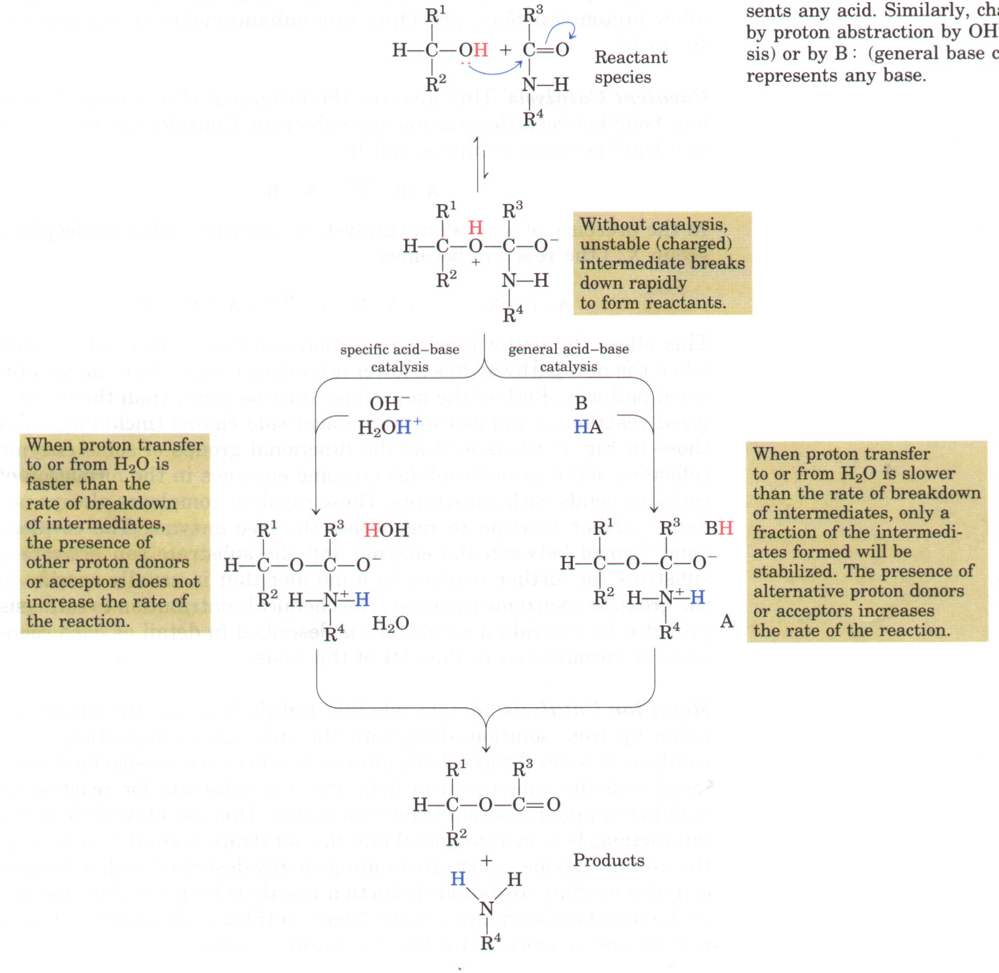
Figure 8-8 Unfavorable charge development during cleavage of an amide. This type of reaction is catalyzed by chymotrypsin and other proteases. Charge development can be circumvented by donation of a proton by H3O+ (specific acid catalysis) or by HA (general acid catalysis), where HA represents any acid. Similarly, charge can be neutralized by proton abstraction by OH- (specific base catalysis) or by B : (general base catalysis), where B : represents any base.
Charged intermediates can often be stabilized (and the reaction thereby catalyzed) by transferring protons to or from the substrate or intermediate to form a species that breaks down to products more readily than to reactants. The proton transfers can involve the constituents of water alone or may involve other weak proton donors or acceptors. Catalysis that simply involves the H+ (H3O+) or OH- ions present in water is referred to as specific acid or base catalysis. If protons are transferred between the intermediate and water faster than the intermediate breaks down to reactants, the intermediate will effectively be stabilized every time it forms.
| No additional catalysis mediated by other proton acceptors or donors will occur. In many cases, however, water is not enough. The term general acid-base catalysis refers to proton transfers mediated by other classes of molecules. It is observed in aqueous solutions only when the unstable reaction intermediate breaks down to reactants faster than the rate of proton transfer to or from water. A variety of weak organic acids can supplement water as proton donors in this situation, or weak organic bases can serve as proton acceptors. A number of amino acid side chains can similarly act as proton donors and acceptors (Fig. 8-9). These groups can be precisely positioned in an enzyme active site to allow proton transfers, providing rate enhancements on the order of 102 to 105. | 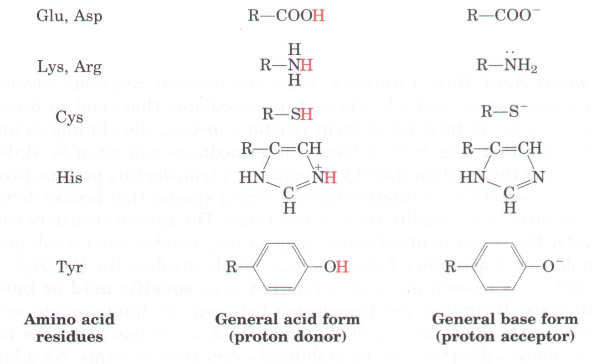 Figure 8-9 Many organic reactions are promoted by proton donors (general acids) or proton acceptors (general bases). The active sites of some enzymes contain amino acid functional groups, such as those shown here, that can participate in the catalytic process as proton donors or proton acceptors. |
This involves the formation of a transient covalent bond between the enzyme and substrate. Consider the hydrolysis of a bond between groups A and B:
In the presence of a covalent catalyst (an enzyme with a nucleophilic group X : ) the reaction becomes
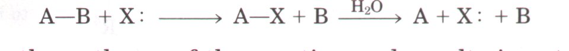
This alters the pathway of the reaction and results in catalysis only when the new pathway has a lower activation energy than the uncatalyzed pathway. Both of the new steps must be faster than the uncatalyzed reaction. A number of amino acid side chains (including all of those in Fig. 8-9), as well as the functional groups of some enzyme cofactors, serve as nucleophiles on some enzymes in the formation of covalent bonds with substrates. These covalent complexes always undergo further reaction to regenerate the free enzyme. The covalent bond formed between the enzyme and the substrate can activate a substrate for further reaction in a manner that is usually specific to the group or coenzyme involved. The chemical contribution to catalysis provided by individual coenzymes is described in detail as each coenzyme is encountered in Part III of this book.
Metal Ion Catalysis
Metals, whether tightly bound to the enzyme or taken up from solution along with the substrate, can participate in catalysis in several ways. Ionic interactions between an enzyme-bound metal and the substrate can help orient a substrate for reaction or stabilize charged reaction transition states. This use of weak-bonding interactions between the metal and the substrate is similar to some of the uses of enzyme-substrate binding energy described earlier. Metals can also mediate oxidation-reduction reactions by reversible changes in the metal ion's oxidation state. Nearly a third of all known enzymes require one or more metal ions for catalytic activity.
| A combination of several catalytic strategies is usually employed by an enzyme to bring about a rate enhancement. A good example of the use of both covalent catalysis and general acid-base catalysis occurs in chymotrypsin. The first step in the reaction catalyzed by chymotrypsin is the cleavage of a peptide bond. This is accompanied by formation of a covalent linkage between a Ser residue on the enzyme and part of the substrate; this reaction is enhanced by general base catalysis by other groups on the enzyme (Fig. 8-10). The chymotrypsin reaction is described in more detail later in this chapter. | 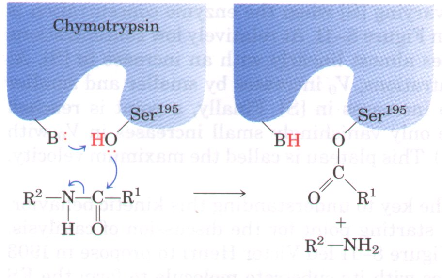 Figure 8-10 The first step in the reaction catalyzed by chymotrypsin, also called the acylation step. The hydroxyl group of Serl95 is the nucleophile in a reaction aided by general base catalysis (the base is the side chain of His57). The chymotrypsin reaction is described in more detail in Fig. 8-19. |